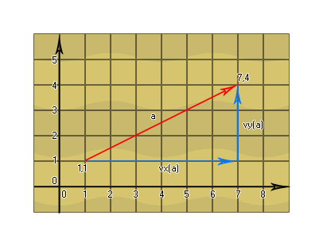

Normalerweise können Vektoren in vielen Situationen verwendet werden, aber manchmal möchten Sie ihren Wert einschränken (wie im Umgang mit Winkeln), weshalb wir sie normalisieren. Dies ist im Wesentlichen ein mathematischer Trick, der verwendet wird, um einen Vektor der Länge n in einen Vektor der Länge 1 umzuwandeln, was bedeutet, dass die Vektorkomponenten normalisiert werden, um zwischen 0 und 1 zu sein. Diese Vektoren werden auch Einheitsvektoren genannt: 
Um einen normalisierten Vektor zu berechnen, müssen wir zuerst die ursprünglichen Vektorkomponenten haben und sie dann verwenden, um die Länge des Vektors zu erhalten. Wir teilen dann jede der Vektorkomponenten durch diese Länge auf, um die normierten Vektorkomponenten zu erhalten, die den normierten Vektor bilden, in dem die Summe der Quadrate aller Koordinaten gleich 1 ist. 
Zuerst nehmen wir die Koordinaten des Vektors und erhalten die Komponenten:
vx = (x2 - x1) = (7 - 1) = 6
vy = (y2 - y1) = (4 - 1) = 3
Wir verwenden dann diese Werte, um die Länge des Vektors zu berechnen:
len = sqr(vx2 + vy2) = sqr(36
+ 9) = sqr(45) = 6.708203932499369
Nun, das gibt uns die genaue Länge des Vektors a, also benutzen wir das, um die beiden Vektorkomponenten vx und vy zu normalisieren:
vx = (vx/len) = (6 / 6.708203932499369) =
0.8944271909999159
vy = (vy/len) = (3 / 6.708203932499369) = 0.4472135954999579
a = 1
Groß! Wir haben nun die Komponenten des Vektors normalisiert! Aber welchen praktischen Nutzen hat das im Kontext von GameMaker Studio 2 ? Okay, lassen Sie uns ein praktisches Beispiel geben...
Nehmen wir an, Sie haben ein Spiel, bei dem der Spieler auf einen Gegner schießen muss und Sie wissen müssen, wie sehr sich das Kugelobjekt bei jedem Schritt entlang der x- und y-Achse bewegen muss, um es zu treffen: 
Dazu würden Sie die Koordinaten des Spielers und des Feindes verwenden, um die Vektorkomponenten und die Länge zu erhalten, dann würden Sie sie normalisieren, um einen Wert zwischen 0 und 1 zu erhalten, den Sie schließlich mit der Geschwindigkeit multiplizieren würden, die die Kugel bei jedem Schritt durchlaufen soll. Diese letzten beiden Werte würden Sie dann speichern und zu den Start-X- und -Y-Koordinaten hinzufügen. Sound kompliziert? Es ist nicht, schau (Werte wurden der Einfachheit halber auf eine Dezimalstelle gerundet):
px = 100;
py = 425;
ex = 356;
ey = 83;
bullet_speed = 5;
vx = (ex - px) = 256
vy = (ey - py) = -342
len = sqrt(vx2 + vy2) = sqrt(65536 + 116964)
= 427.2
vx = vx / len = 0.6
vy = vy / len = 0.8
speed_x = vx * bullet_speed = 3
speed_y = vy * bullet_speed = 4
Um also das Ziel zu treffen, müssen wir bei jedem Schritt 3 zur x-Koordinate der Kugeln und 4 zur y-Koordinate hinzufügen.